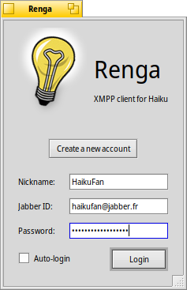
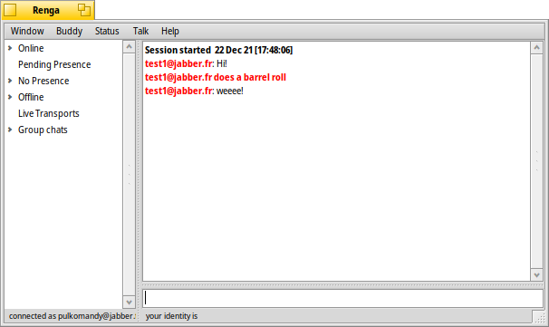

XMPP is an open chat protocol that allows users to communicate with each other much like AOL Instant Messenger and ICQ.
Renga is the client that allows XMPP to be used on Haiku. This user guide describes how to use the client as well as the XMPP chat system. Here's what we'll be covering:
Renga is a Haiku-native client. It is based on Jabber4BeOS originally developed by Rapture In Venice.
Renga delivers the
friendly user experience that many XMPP clients do not, much in the style of JabberIM.
Renga intends to be simple to use, with recycled GUI metaphors that make
using this client as natural as any other you're used to.
As such, let's look at Renga!
When you first run Renga, you will be presented with a window like this:

If you've used XMPP in the past then this should look familiar to you. Just
enter the login information you've always used. If you haven't seen the nickname field
before, this is used as a friendly name only for yourself in chat windows. Nobody else will see this
information so it's not critical. As an expert, you'll probably want to check the Auto-login box as well.
If you're new to XMPP, this is an important step in getting online. You'll want
to decide on your official username! Here is what all the fields mean:
There are also some rules you should know about how Auto-login works in specific situations. Here they are:
Congratulations, you're logged in! Your login window has now transformed and looks like:
This is your buddy list, or "roster" as the XMPP group likes to call it. This is where you'll see your friends and family, their online status and more. If you just created your account, it will appear empty. So let's fill it up!
There are two basic concepts when dealing with this list: roster and presence. While many external chat systems
treat these concepts as one entity, XMPP keeps them separate. What you need to rememeber is that even if you add a friend to your list (roster), you don't automatically begin seeing their online status (presence). You need to ask for it.
Let's illustrate this with an example.
Let's say you wish to add Rapture In Venice to your buddy list. Don't worry, it's OK, I like to chat. :-) The first thing you want to do is go to your Edit menu and select "Add New Buddy."
You will see a screen like this:
The two important fields at this time are Nickname and Jabber ID. The username is the Jabber ID of the user you want to add. Mine is rapture@jabber.org, so type that one in.
Next, you want to add a nickname, a casual name that tends to be less cryptic then the username. This is up to you, so you can feel free to type in whatever information you'd like that will help you remember who this new buddy really is. The usual value for me would be "Rapture In Venice". Remember, it's totally up to you.
Hit "Add My Buddy".
If everything worked well, you should now see your new entry under the Unknown list. It should be blue. If you see it there, congratulations! I am now your buddy. :-) I am now on your roster. But what good is a buddy when you don't know when they're online? This is the concept of presence.
So you want to know when I'm online, right? OK. Right-click on my name in the list and in the Presence sub-menu select "Subscribe." You've just sent a request to me asking for my presence. What I will see in a moment is your request and I can either accept or decline. Remember this screen because you might be seeing it again very shortly:
If you don't get acceptance right away, don't worry. It could be that the user (possibly me, as in this case) is not online. If at some point the presence is accepted, you will be alerted so no need to stress!
If you've gotten acceptance, you've probably already noticed that the user is now either in the online or offline list and their color is green (dark or light) or red. Bet you can't guess what this means? ;-)
Right! The greens are for online, red is for offline. The darker shade of green means the user is online, but is either away from their computer or does not want to be distrubed. The lighter shade of green signifies their open for chat. Usually, after being granted presence, the user is online because, well, how else could they have accepted your presence?
Great! So the user is online. Now what? You want to chat is what! Isn't that why you downloaded this program? :-) There are two options for chatting:
While the messaging and chat paradigms are different, the window will look mostly the same:
Make sure you understand that little note on the lower left. When newlines are allowed, simply hitting Enter inserts a raw newline into your message, otherwise it sends the message. Command-Enter always performs the opposite operation.
There are several fun chat features available in Renga. The first you might notice are Canned Quips. These are pre-generated messages that you define. You usually want to type phrases and exclamations you say a lot. As an example, these are my usual quips:
I've included four messages, but you can use up to nine. Each message is associated with a Command-number key, so "Message #4" is triggered with Command-4. So easy. :-)
You can edit your canned quips in the preferences panel under the "Messaging" tab.
You'll notice that next to each message there is a checkbox as seen below:
This is the quick-fire option and it affects how messages are included in your chat session:
As an example, I'm always having to tell people where my website is (whether they ask or not...heh heh)! I've set up my first message for quick-fire. So, if I'm in the middle of a sentence and I see the need to send the information out immediately, Command-1 sends it. Notice how my current message is unaffected:
On the other hand, my fourth quip, "blue screen of death," is not a standalone message. The problem is I always have to type this phrase when explaining to strangers how much better BeOS is than Windows! Seeing that I've had carpal-tunnel problems in the past typing this exact phrase thousands of times a day, I did't make it a quick-fire and instead include it in messages that are part of larger sentences as shown:
Renga also supports what's known as "/me syntax". This is when you want to type a message but want to make it as part of an action. It's almost always used for humorous purposes. Here's an example:
 To deliver this kind of message, use this syntax:
Here's exactly how I generated the previous example:
In addition to "/me syntax", Renga supports other IRC-like and not so IRC-like "slash" commands:
For some, /alert can be annoying as it can easily be abused. This feature can be turned off in the "Chat Rules" section of the preferences panel.
A feature that is new with Jabber for BeOS v1.2 is chat history. In any chat window, hold down the Command key and use the up and down arrows to scroll through the history of your last 50 messages. This is handy when your buddy misses a message or you just want to accentuate it! ;-)
In addition to one on one chat, Renga also support group chat. This is when more than two people can chat in the same window at the same time. The advantages are clear:
There are two ways to enter a groupchat. The first way allows you to create any arbitrary room you want which is what you want if you want to organize a specific meeting place among friends. From the buddy window, select Talk->Start Group Chat.
Where it says Username, type the nickname you'd like to use for the room. Be unique! Then, where it says Room Name, give the desired name. Room names are of the form name-of-the-room@conference.jabber.org.
There is a second way to enter a group chat and that's with Renga' own Channels. Channels are pre-named group chat rooms with friendly titles that other Renga users frequent. These are great meeting places for people of common interests. Explore.
We've eluded to the preferences panel several times, and you've probably found it and already know everything about it. But just to be sure... :-)
For those of us who aren't so quick with new applications, the preferences panel can be found under the Edit menu as "Preferences..." There are three tabs:
If XMPP was just another new chat system, then everyone would just be a little more ill. :-) But, in fact, XMPP is not. While it does support it's own network of users who can communicate with each other along with other things like sending files, XMPP allows it's users to talk directly with users of other chat clients! A little discussion about how it's done is in order.
If you're familiar with other BeOS apps such as GimICQ and BeAIM, you know that getting unofficial chat clients for popular chat systems is not a new thing. Anything on the Internet is hackable, so there's no reason to believe AOL and ICQ have secured their networks better than any hackable e-commerce system.
Well, these unofficial clients are just that -- clients. GimICQ only lets you talk to other ICQ users, BeAIM the same with AOL users. However, XMPP lets you talk to both of these systems and more!
As with GimICQ and BeAIM, the idea is that you have a login to the external system already. What you do is register your login information with the XMPP transport that's responsible for talking with that system. Once complete, you can chat with AOL users just as easily as you can with XMPP users themselves.
When you've registered with a transport, Renga has now become just like a login to another chat service. If you registered as "BeMan" under AOL, then anyone on AOL, or XMPP, who sends a message to your AOL address will reach you on your Renga client. Basically, you are using one client with one main login (your Jabber ID) and extra virtual logins (your AOL, etc... logins). Everything is completely transparent from now on.
Lets try it. Go to your preferences panel and click the "Transports" tab. Let's pretend you want to register with the AOL transport (Feel free to go ahead and register with whichever transport you'd like to right now).
Assuming your username and password is "BjorkLover" and "fulloflove", select the AOL transport and enter the information in as above:
Hit "Register".
Here's where I have to give my disclaimers. You may remember the very public chat wars that went on between AOL Instant Messenger and MSN Messenger a while back. Basically, Microsoft was trying to hack the AOL chat protocol so that MSN Messenger users could talk to AOL users and vice-versa. AOL would have none of it and in what was a hilarious coding war, the cycle began:
What I'm trying to get at is that the XMPP transports are not always working. They are subject to changed protocols and downed servers. When the transports are updated to match the protocols then they'll work again...Basically,
if a transport doesn't work with Renga, it's probabably not the client's fault. You'll have to wait for the server's to catch up to the changing protocols. When these situations arise, you'll have two options:
Given a happy world where all transports work, you'll also want to add these external users to your roster. This is done the same as when adding XMPP users, except you want to change the menu to reflect what chat system they're using. Notice that the instructions on the "Add New Buddy" screen will change as you flip through the systems.
There are several other features that XMPP offers, as well as many nuances that are specific to Renga. The big one being changing your own online status. But I'll leave these all for you to explore! :-) If it's not easy enough to figure out on your own, then Rapture In Venice has failed you as a developer. So be confident!
If you're a registered user, feel free to ask me for help. Rapture In Venice's contact information can be found below, but since this is a chat client the most fun way to get in touch is through XMPP! As I said before, my Jabber ID is rapture@jabber.org. I hope this user manual is a friendly springboard to the world of XMPP and Renga. Have fun!
Rapture In Venice was born to help BeOS become the #1 desktop OS on the consumer market. A lofty goal, but Be, Inc. started it. :-) As such, Rapture In Venice needs your support. If we're going to be able to create top quality applications that help bolster the existing BeOS library, we need you to support us back.
Below is how you can get in contact with Rapture In Venice with question, tips, business proposals and whatever else you may need. As always, thank you for choosing Rapture In Venice.
Rapture In VeniceLogging In
I'm Logged In...So Now What?!


Chat Features


- I've just pressed Command-1 -

- I've just pressed Command-4 -
- Note how /me makes my message an action -
/me your action
/me is saddened by your remark. :(
Group Chat
The Preferences Panel
XMPP Transports: Gateways to External Chat Systems

Further Exploration
The Rapture In Venice Cause
2663 S. Moore Dr. #B
Lakewood CO 80227
(720) 962-0898
jblanco@uswest.net
http://www.users.uswest.net/~jblanco